Manual do Fornecedor — Compra Mais
Programa Compra Mais · Prefeitura de Rio Branco Guia completo para a empresa participar das compras públicas municipais — do autocadastro ao fornecimento.
Este manual foi escrito para qualquer pessoa, sem exigir conhecimento técnico. Cada etapa traz orientação passo a passo e telas reais do sistema. As imagens são do ambiente de demonstração; os dados (empresa, editais, valores) são apenas exemplos.
Sumário
- O que é o Compra Mais
- Visão geral da jornada
- Etapa 1 — Autocadastro da empresa
- Etapa 2 — Acessar a plataforma (login)
- Etapa 3 — A tela Início (seu painel)
- Etapa 4 — Encontrar editais compatíveis
- Etapa 5 — Credenciar-se em um edital
- Etapa 6 — Manter seus documentos em dia
- Etapa 7 — Acompanhar seus credenciamentos
- Etapa 8 — O fornecimento (demandas distribuídas)
- Notificações
- Minha conta, procuradores e privacidade
- Transparência
- Glossário
- Perguntas frequentes
1. O que é o Compra Mais
O Compra Mais é a plataforma digital de compras públicas da Prefeitura de Rio Branco. Ele conecta as empresas locais (micro e pequenas empresas, MEIs e demais fornecedores) às demandas das secretarias — de fardamento escolar a materiais e serviços.
A lógica é simples e justa:
- Cada edital representa uma demanda de uma secretaria (por exemplo, "1.000 conjuntos de fardamento escolar").
- Toda empresa compatível (pelo ramo de atividade — o CNAE) e regular (documentos em dia) pode se credenciar.
- A quantidade do edital é dividida de forma igualitária entre as empresas aptas, respeitando a capacidade que cada uma declara. Isso é o rateio — não há "leilão" nem menor preço: quem está apto participa do fornecimento.
Em uma frase: cadastre a empresa → encontre editais do seu ramo → credencie-se → mantenha os documentos válidos → receba sua cota de fornecimento.
2. Visão geral da jornada
flowchart TD
A["1 · Autocadastro<br/>(CNPJ + e-mail + senha)"] --> B["2 · Login"]
B --> C["3 · Início<br/>(painel com alertas)"]
C --> D["4 · Vitrine de Editais<br/>(compatíveis com seu CNAE)"]
D --> E["5 · Credenciamento<br/>capacidade → documentos → prova de vida → termo"]
E --> F["6 · Documentos<br/>(manter válidos)"]
F --> G["7 · Meus Credenciamentos<br/>(acompanhar análise)"]
G --> H{"Aprovado<br/>e apto?"}
H -- sim --> I["8 · Demandas Distribuídas<br/>(sua cota = fornecimento)"]
H -- não --> F
I --> J["Fornece à Prefeitura"]
Cada etapa tem uma entrada no menu lateral do portal: Início, Editais, Meus credenciamentos, Documentos, Demandas distribuídas, Contestações, Procuradores, Privacidade.
3. Etapa 1 — Autocadastro da empresa
O cadastro é gratuito e feito pela própria empresa (autocadastro). Você vai precisar do CNPJ e de um e-mail e senha para acessar depois.
Passo 1.1 — Abrir a tela de acesso
Ao entrar no endereço da plataforma, você verá a tela de acesso. Ela tem duas abas: Entrar (para quem já tem conta) e Criar conta (para o primeiro acesso).

Passo 1.2 — Escolher "Criar conta"
Clique na aba Criar conta. O formulário de autocadastro será exibido.
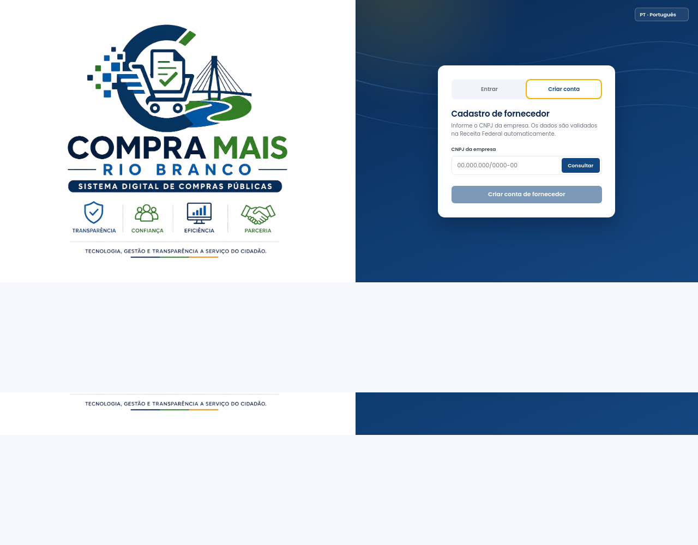
Passo 1.3 — Informar o CNPJ e consultar
Digite o CNPJ da empresa e clique em Consultar. O sistema busca os dados oficiais na Receita Federal e preenche automaticamente:
- Razão social, porte (ME, EPP, MEI…) e situação cadastral;
- o quadro de sócios (QSA);
- o endereço da empresa (que você pode ajustar — número, complemento — ou atualizar por CEP).
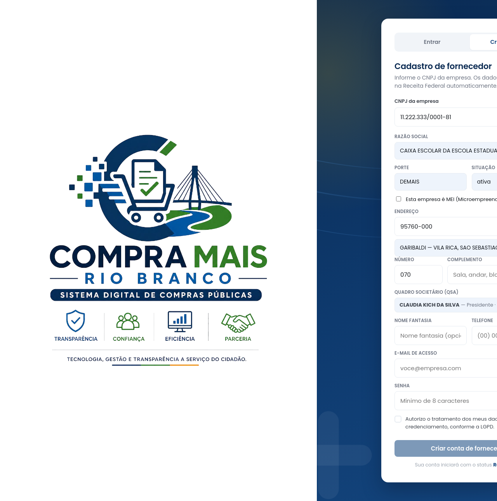
Sou MEI. Se a empresa é MEI, marque a opção Declarar MEI. A Receita costuma classificar o MEI como "ME"; a sua declaração tem precedência e o porte passa a constar como MEI.
A Receita está indisponível? Você pode preencher os dados manualmente e continuar o cadastro.
Passo 1.4 — Definir e-mail, senha e concluir
Informe o e-mail e a senha de acesso, marque o consentimento (obrigatório — trata do uso dos seus dados conforme a LGPD) e clique em Criar conta. Pronto: a conta é criada, você é autenticado e entra direto no portal.
flowchart LR
A[CNPJ] -->|Consultar| B[Dados oficiais<br/>Razão social · QSA · endereço]
B --> C[E-mail + senha]
C --> D[Consentimento LGPD]
D -->|Criar conta| E[Conta criada<br/>+ login automático]
Guarde seu e-mail e senha. Serão eles que você usará para entrar nas próximas vezes.
4. Etapa 2 — Acessar a plataforma (login)
Nas próximas vezes, use a aba Entrar: informe o e-mail e a senha cadastrados e clique em Entrar. Se esquecer a senha, use Esqueci minha senha para redefini-la por e-mail.
5. Etapa 3 — A tela Início (seu painel)
Logo após entrar, você chega ao Início — um painel que resume a situação da sua empresa e destaca o que precisa de atenção.
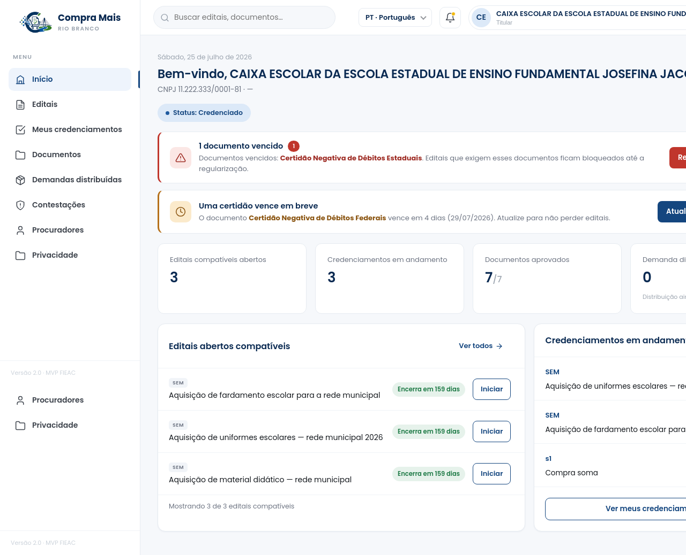
O que você encontra aqui:
- Saudação e status da empresa (ex.: Status: Credenciado).
- Alertas de documentos: documentos vencidos (em vermelho) e os que vencem em breve (em amarelo). Editais que exigem um documento vencido ficam bloqueados até a regularização — por isso vale manter tudo em dia.
- Indicadores rápidos: Editais compatíveis abertos, Credenciamentos em andamento, Documentos aprovados e Demanda distribuída.
- Atalhos: lista de editais abertos compatíveis (com botão Iniciar) e seus credenciamentos em andamento.
Dica: o topo da tela tem uma busca global ("Buscar editais, documentos…"), um seletor de idioma (Português, English, Español) e o sino de notificações.
6. Etapa 4 — Encontrar editais compatíveis
No menu, clique em Editais. Você verá a Vitrine de Editais — a lista de oportunidades do seu ramo de atividade.
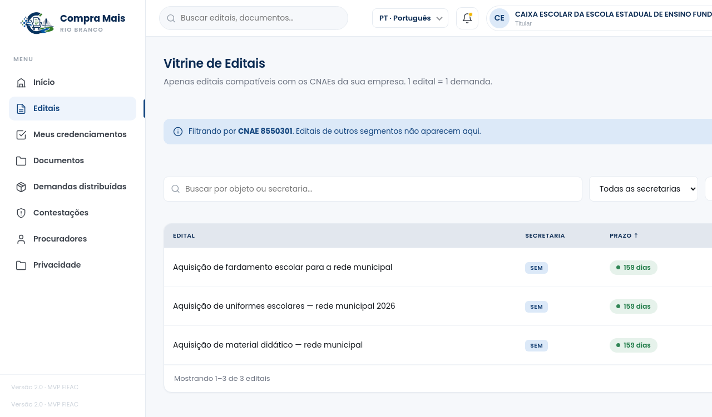
Pontos importantes:
- A vitrine mostra apenas editais compatíveis com os CNAEs da sua empresa. Uma faixa informa, por exemplo, "Filtrando por CNAE 8550301". Editais de outros segmentos não aparecem aqui.
- 1 edital = 1 demanda. Cada linha traz o objeto (o que será adquirido), a secretaria demandante e o prazo (ex.: encerra em 159 dias).
- Use a busca ("Buscar por objeto ou secretaria…") e o filtro Todas as secretarias para encontrar mais rápido.
- Para participar, clique no edital (ou em Iniciar) e siga para o credenciamento.
Minha empresa atua no ramo, mas o edital não aparece? Pode ser divergência de CNAE. Nesses casos existe a Contestação de CNAE (menu Contestações), onde você solicita a revisão do enquadramento.
7. Etapa 5 — Credenciar-se em um edital
O credenciamento é um assistente guiado em 4 passos, sempre visível no topo da tela: Capacidade → Documentos → Termo de Aceite → Concluído.
stateDiagram-v2
[*] --> Capacidade
Capacidade --> Documentos: declarou o teto
Documentos --> ProvaDeVida: documentos válidos
ProvaDeVida --> Termo: prova de vida aprovada
Termo --> Concluido: aceitou o termo
Concluido --> [*]: Pendente de Análise
note right of ProvaDeVida
Verificação facial (UC007):
exigida antes de assinar o termo
end note
Passo 5.1 — Declarar a capacidade
Selecione os itens do edital que a sua empresa quer atender e, para cada um, informe a quantidade máxima que consegue entregar — o seu teto.
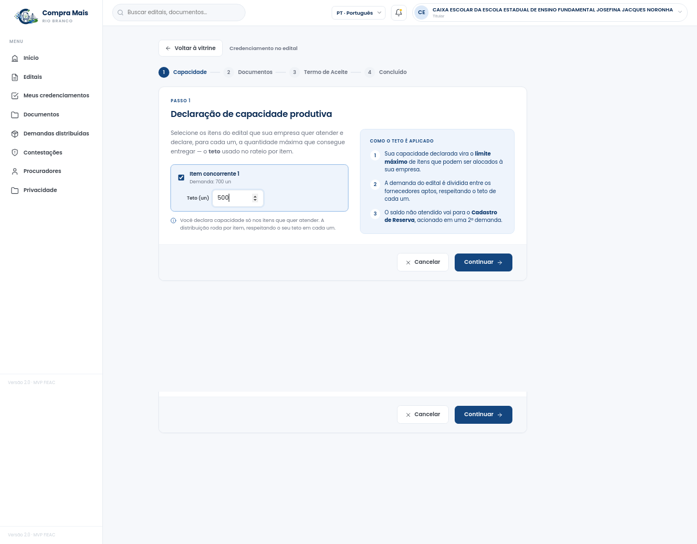
Como o teto é usado (o painel lateral explica):
- A sua capacidade declarada vira o limite máximo de itens que podem ser alocados à sua empresa.
- A demanda do edital é dividida entre os fornecedores aptos, respeitando o teto de cada um.
- O saldo não atendido vai para o Cadastro de Reserva, acionado em uma 2ª demanda.
Você declara capacidade apenas nos itens que quer atender. A distribuição roda por item, respeitando o seu teto em cada um.
Passo 5.2 — Documentos exigidos
O sistema mostra a lista de documentos exigidos e o status de cada um. O melhor: documentos válidos enviados em editais anteriores são reaproveitados automaticamente — você só anexa o que falta ou o que está vencido.
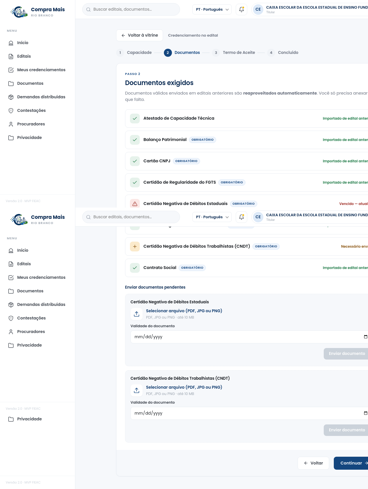
Os status possíveis:
- ✅ Importado de edital anterior — já enviado e válido, nada a fazer.
- ⚠️ Vencido — atualizar — envie a versão atualizada.
- ➕ Necessário enviar — documento obrigatório ainda não enviado.
Para enviar um pendente, use Selecionar arquivo (PDF, JPG ou PNG, até 10 MB) e informe a validade do documento. Depois clique em Continuar.
Passo 5.3 — Prova de vida (verificação facial)
Antes de assinar o Termo, o sistema pede a prova de vida (verificação facial) do responsável — uma checagem de segurança que confirma que é uma pessoa real concluindo o credenciamento. O Termo só pode ser aceito após a prova de vida ser aprovada.
Passo 5.4 — Termo de Aceite
No último passo, você assina o Termo de Aceite. Ele declara que as informações e documentos são verdadeiros e que você concorda com as condições do edital (Lei Complementar 123 e regras do Compra Mais). Marque "Li e aceito o Termo de Aceite do credenciamento" e clique em Enviar credenciamento.
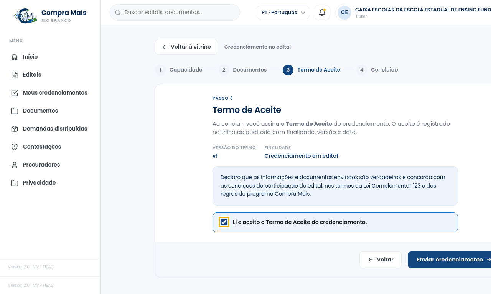
O aceite é registrado na trilha de auditoria com finalidade, versão e data.
Passo 5.5 — Concluído: Pendente de Análise
Ao enviar, seu credenciamento fica Pendente de Análise. A partir daí a equipe da Prefeitura analisa os documentos. Você acompanha tudo em Meus credenciamentos e recebe notificações sobre o resultado.
8. Etapa 6 — Manter seus documentos em dia
A tela Documentos reúne todos os documentos da sua empresa, com validade e status. Como os documentos são reaproveitados entre editais, mantê-los válidos aqui adianta (ou destrava) qualquer credenciamento futuro.
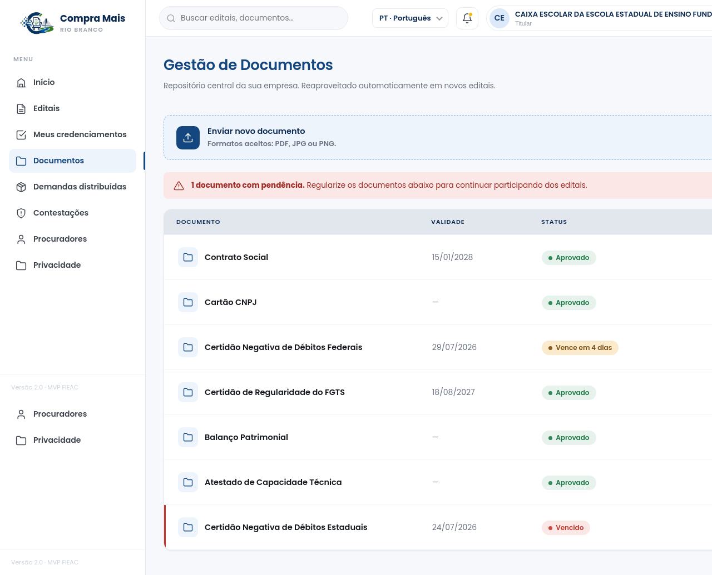
Por que isso importa? Um documento vencido pode bloquear editais que o exigem. O Início e as notificações avisam quando algo vence — atualize antes do prazo para não perder oportunidades.
9. Etapa 7 — Acompanhar seus credenciamentos
Em Meus credenciamentos você vê todos os editais em que se credenciou e o estágio de cada um (iniciado, pendente de análise, aprovado, em correção…).
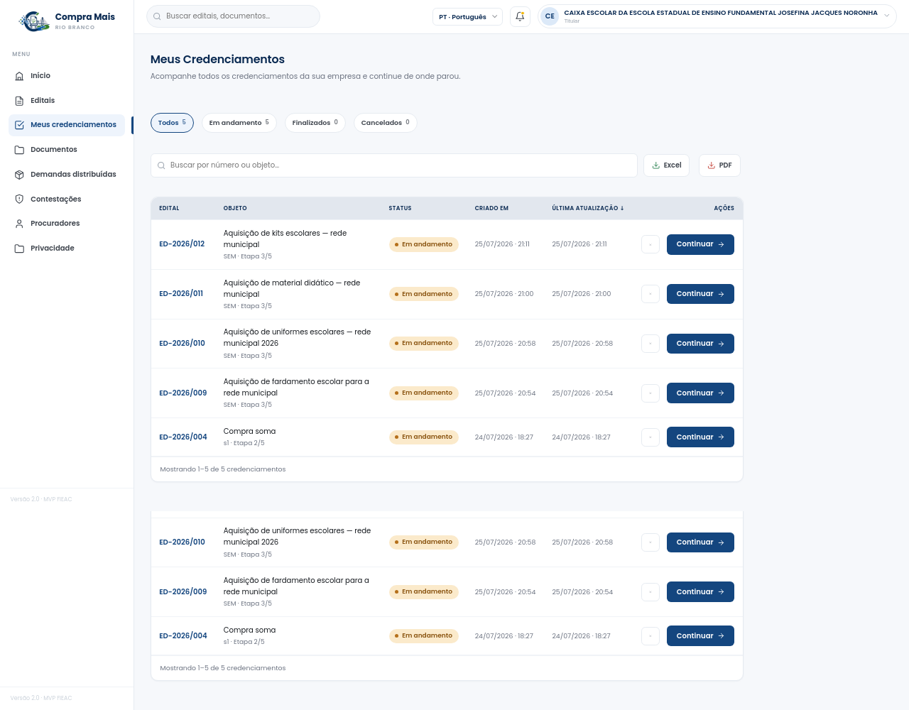
Clique em um item para ver o detalhe: o edital, a capacidade declarada, os documentos vinculados e o histórico. Se algo for reprovado, aqui você vê o motivo e reenvia a correção.
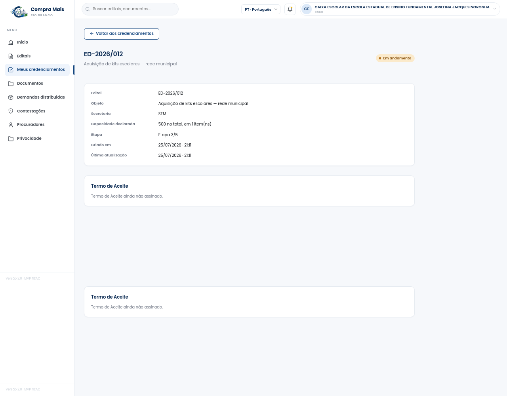
flowchart LR
A[Iniciado] --> B[Pendente de Análise]
B --> C{Análise da Prefeitura}
C -->|Aprovado| D[Apto ao rateio]
C -->|Reprovado| E[Em correção]
E -->|Reenvio| B
10. Etapa 8 — O fornecimento (demandas distribuídas)
Quando um edital em que você está apto tem sua distribuição realizada, a sua cota aparece em Demandas distribuídas — é o fornecimento propriamente dito.
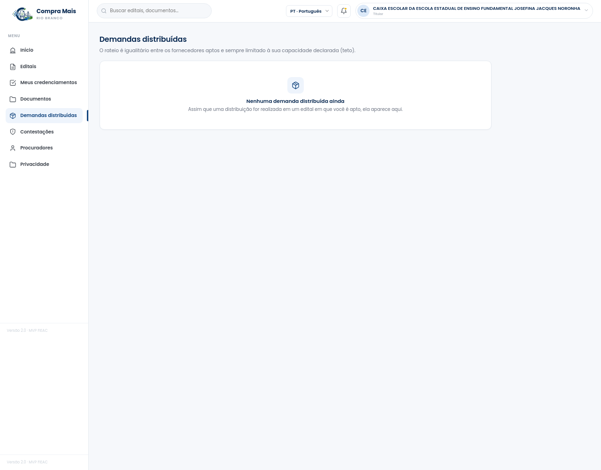
- Enquanto não houver distribuição, a tela mostra: "Nenhuma demanda distribuída ainda. Assim que uma distribuição for realizada em um edital em que você é apto, ela aparece aqui."
- O rateio é igualitário entre os fornecedores aptos e sempre limitado à sua capacidade declarada (teto).
Como a Prefeitura divide a demanda (rateio equitativo):
flowchart TD
A[Demanda do edital<br/>ex.: 1.000 un] --> B[Fornecedores APTOS no item]
B --> C[Divisão igualitária<br/>entre todos os aptos]
C --> D{Cabe no teto<br/>de cada um?}
D -- sim --> E[Cota confirmada<br/>para cada fornecedor]
D -- excede --> F[Limita ao teto<br/>e redistribui o excedente]
F --> C
E --> G[Saldo não atendido<br/>→ Cadastro de Reserva]
Quando você recebe uma cota, também recebe uma notificação. A partir daí, o fornecimento segue as orientações da secretaria demandante (entrega, prazos e comprovações).
11. Notificações
O sino no topo e a página Notificações avisam sobre o que importa: resultado do credenciamento, documento a vencer, novo edital compatível e cota recebida em uma distribuição.
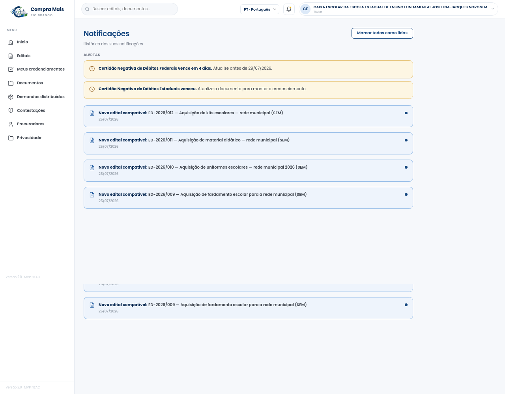
Notificações não lidas aparecem destacadas e no contador do sino. Clique para abrir o item relacionado (o edital, o documento ou o credenciamento).
12. Minha conta, procuradores e privacidade
Minha conta
Em Minha conta você revisa e ajusta os dados de acesso e do responsável, e troca a senha.
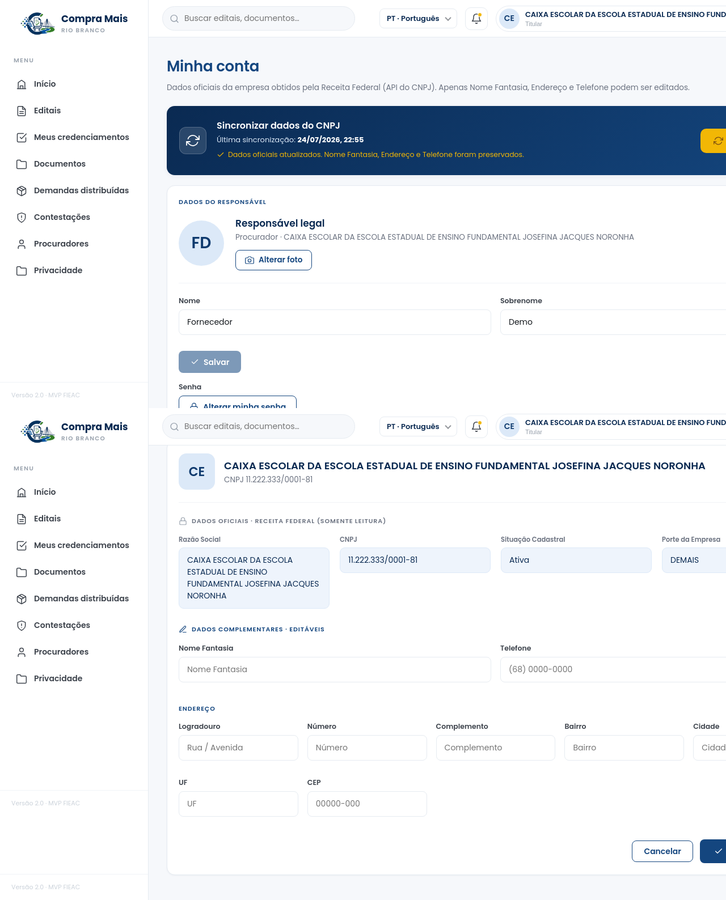
Procuradores
O titular da empresa pode cadastrar procuradores — pessoas autorizadas a operar em nome da empresa no portal. (Somente o titular gerencia procuradores.)
Privacidade (LGPD)
Em Privacidade, o titular exerce seus direitos previstos na LGPD — como solicitar acesso, correção ou exclusão de dados pessoais. O consentimento aceito no cadastro fica registrado e pode ser consultado aqui.
13. Transparência
A área de Transparência apresenta, de forma pública, os números do programa: investimento na economia local, empresas participantes, participação por porte (MEI/ME) e editais. É a prestação de contas do Compra Mais à sociedade.
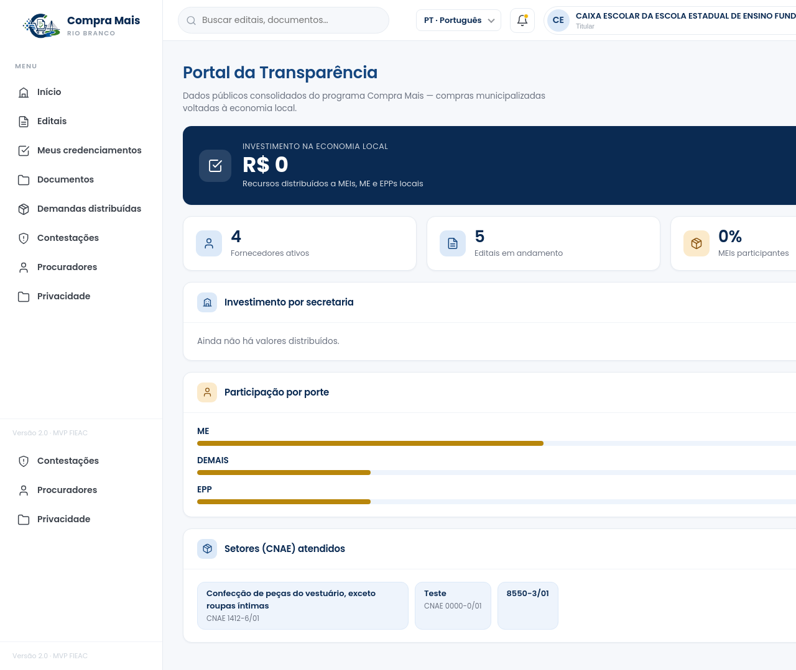
14. Glossário
| Termo | O que significa |
|---|---|
| CNAE | Código que identifica o ramo de atividade da empresa. Define quais editais são compatíveis com você. |
| Edital | Uma demanda de compra de uma secretaria. No Compra Mais, 1 edital = 1 demanda. |
| Credenciamento | O processo de se habilitar em um edital (capacidade + documentos + prova de vida + termo). |
| Capacidade / Teto | A quantidade máxima que você declara conseguir entregar de um item. Limita a sua cota no rateio. |
| Rateio / Distribuição | A divisão igualitária da demanda entre os fornecedores aptos, respeitando o teto de cada um. |
| Apto | Fornecedor com credenciamento aprovado, que entra no rateio. |
| Cota | A quantidade que coube à sua empresa em uma distribuição — o seu fornecimento. |
| Cadastro de Reserva | Fila que recebe o saldo não atendido e os retardatários, acionada em uma 2ª demanda. |
| Prova de vida | Verificação facial do responsável, exigida antes de assinar o Termo. |
| Termo de Aceite | Declaração final que conclui o credenciamento e é registrada na auditoria. |
| Titular / Procurador | O titular representa a empresa; procuradores são autorizados por ele a operar no portal. |
15. Perguntas frequentes
Preciso pagar para me cadastrar? Não. O cadastro e a participação no Compra Mais são gratuitos.
Meu edital sumiu da vitrine. Por quê? A vitrine mostra só editais compatíveis com o seu CNAE e abertos. Se um documento obrigatório venceu, editais que o exigem ficam bloqueados até você regularizar — verifique os alertas no Início e na tela Documentos.
Não consegui concluir o credenciamento no Termo. O Termo de Aceite só é liberado após a prova de vida ser aprovada e os documentos obrigatórios estarem válidos. Confira os passos anteriores do assistente.
Enviei um documento em outro edital. Preciso enviar de novo? Não. Documentos válidos são reaproveitados automaticamente. Você só anexa o que falta ou o que venceu.
Como sei que recebi uma cota de fornecimento? Você recebe uma notificação e a cota aparece em Demandas distribuídas.
Esqueci minha senha. Na tela de acesso, use Esqueci minha senha para redefini-la por e-mail.
Precisa de ajuda? Use os canais de atendimento da Prefeitura de Rio Branco indicados no rodapé da plataforma. Este manual acompanha a Versão 2.0 do Compra Mais.